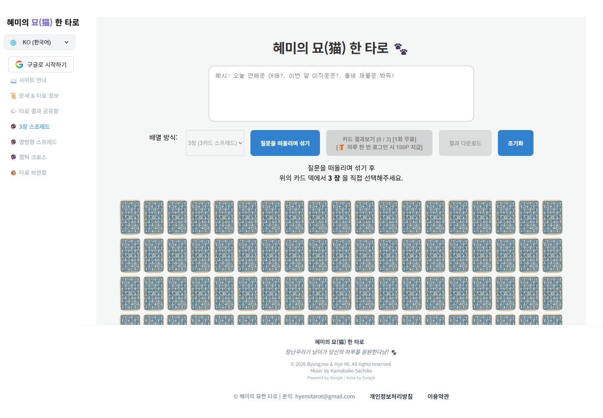
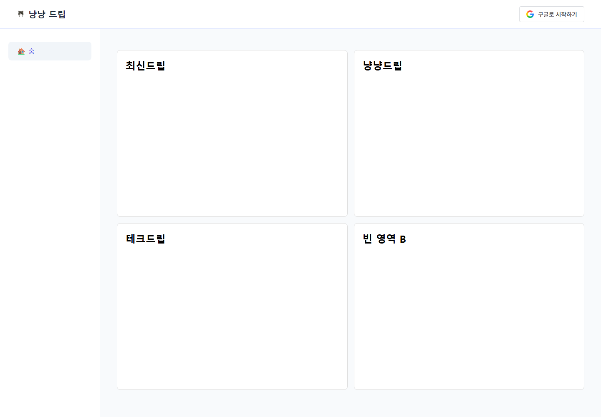

사이트 방문하기 ↗  AI TAROT · 01 혜미타로 오늘의 마음이 궁금할 때, AI 무료 타로로 가볍게 나만의 리딩을 만나볼 수 있는 서비스입니다. 냥의 안내 냥! 로그인 없이도 타로를 한 번 무료로 볼 수 있어요. 로그인하면 매일 하루 한 번, 100P도 챙겨가세요! 🐾 사이트 방문하기 ↗
사이트 방문하기 ↗  WIKI STYLE · 02 냥드립 문서 속 위키 링크를 따라가며 여러 내용을 탐색하는 나무위키 스타일의 정보 사이트입니다. 사이트 방문하기 ↗